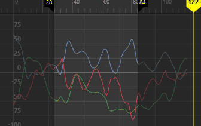

- 在“曲线图编辑器”(Graph Editor)的“曲线”(Curves)菜单中，选择“平滑过滤器(高斯)”(Smooth Filter (Gaussian)) >


平滑（高斯）过滤器应用于一个通道
“平滑过滤器(高斯)”(Smooth Filter (Gaussian))类似于 MotionBuilder 平滑过滤器，因为它对关键帧进行平均以创建平滑移动。在过滤立方（自动）或重采样曲线时，“平滑过滤器(高斯)”(Smooth Filter (Gaussian))效果非常好。
- 时间范围(Time Range)
-
指定简化曲线的时间范围。
- 全部(All)
-
简化整个时间范围的曲线。

- 选择(Selection)
-
使您可以选择曲线的一部分，以便可以将过滤器应用于限定区域，而不是影响整个曲线。按住 Ctrl 键可一次选择多个区域。

- 开始(Start)/结束(End)
-
指定的时间范围（开始时间/结束时间）内的所有关键帧均会简化。

- 时间滑块(Time Slider)
-
简化由时间滑块的“播放开始”(Playback Start)和“播放结束”(Playback End)时间定义的时间范围内的曲线。

- 开始时间(Start Time)
-
指定时间范围的开始。仅当启用“开始/结束”(Start/End)时，该选项才可用。
- 结束时间(End Time)
-
指定时间范围的结束。仅当启用“开始/结束”(Start/End)时，该选项才可用。
- 预览(Preview)
- 使您可以在应用之前直观地看到曲线上的效果。默认情况下，此选项处于启用状态。

- 过滤器宽度(Filter Width)
- 用于设置平滑窗口宽度。默认值为 3。值越大，平滑效果越强；值越小，平滑效果越弱。
- 采样计数(Sample Count)
- 用于设置在曲线上采用的采样数。默认值为 8。
- 使用四元数(Use Quaternions)
- 在平滑之前，将旋转曲线转化为四元数。在平滑之后，四元数将转化回 Euler 曲线。若要应用“使用四元数”(Use Quaternions)，请选择所有 3 个旋转通道。
- 默认情况下，此选项处于禁用状态。